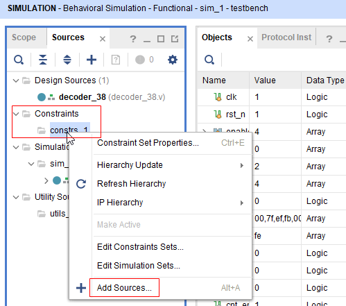
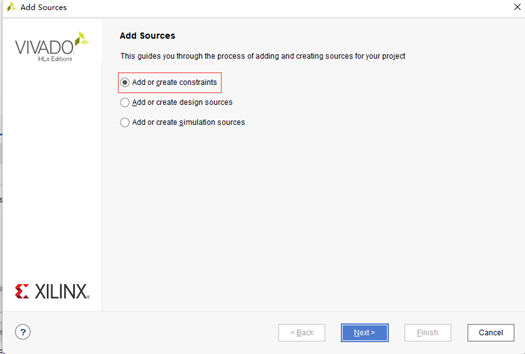
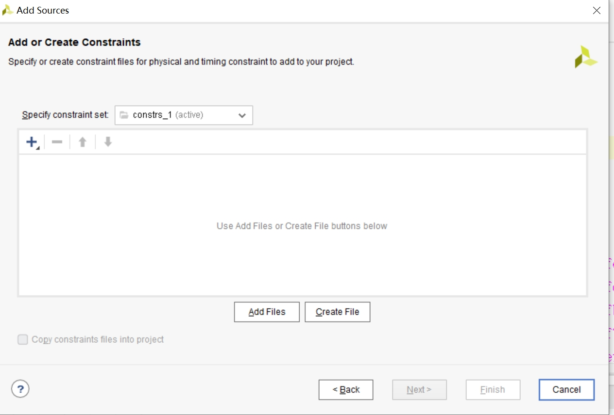
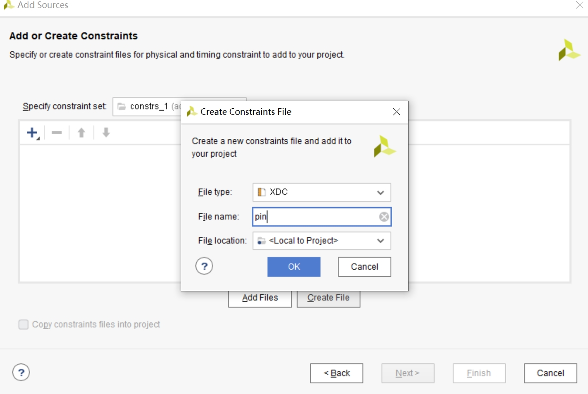
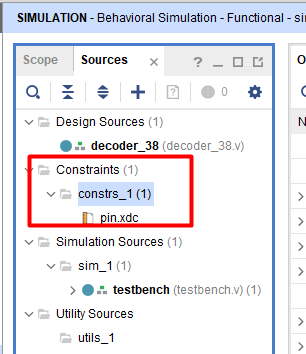
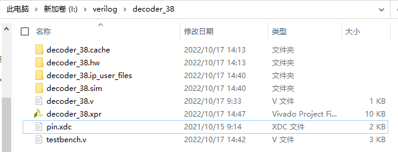
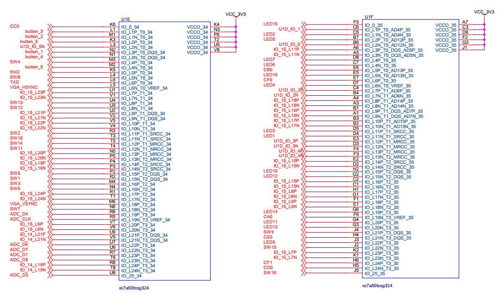

添加约束文件
1、什么是约束¶
1.1 管脚约束¶
为了在开发板上运行，让电路读取开关输入，驱动Led输出，还需将RTL中的顶层模块的输入输出信号和开发板上的FPGA芯片的引脚对应起来，即物理约束，才能上板。
语法格式：
set_property PACKAGE_PIN pin [get_ports port_name]
set_property IOSTANDARD LVCMOS33 [get_ports port_name]
每个信号都要用上面两条约束语句进行描述，第一条语句对RTL中的信号和FPGA芯片的管脚进行绑定，第二条语句说明管脚的电平特性，跟芯片型号有关，本实验统一用LVCMOS33。
重点是其中的pin和port_name, pin是FPGA开发板上FPGA芯片的引脚名，port_name即RTL代码中顶层模块用到的输入输出信号名。EGO2 开发板上的FPGA的管脚与外设的连接关系请查看本页最后一节“4、EGO2 开发板管脚映射”。约束文件的编写需要结合自己的RTL代码中的信号命名和管脚图进行编写。
1.2 时钟约束¶
在工程中，对于用到时钟的时序电路，为了更好的时序分析，让工具根据给定的频率进行逻辑优化，最好单独添加时钟约束文件，没有时钟约束对功能不影响。
时钟约束是为了优化电路的，是可选的。时钟信号和Y18的约束关系应该写在管脚约束文件中。
语法格式：
create_clock -name name -period time [get_ports port_name]
编写clock.xdc，内容通常如下:
create_clock -name clk -period 10 [get_ports clk]
3-8译码器实验没有用到时钟，无需添加时钟约束。
2、添加约束文件¶
在源文件框内，右击constrs_1，选择Add Sources

选择Add or create constraints，选择Next，进行下一步；

选择Create Files，创建约束文件；

接下来弹出如下对话框，File type和File location使用默认值，File name为pin，

经过几秒项目更新后，Constraints里面有了需要的约束文件pin.xdc，双击打开，进行代码编辑，编写约束文件，到此约束文件添加完成。

本次3-8译码器用到的约束文件pin.xdc内容如下:
set_property PACKAGE_PIN Y7 [get_ports en[0]]
set_property PACKAGE_PIN W9 [get_ports en[1]]
set_property PACKAGE_PIN Y9 [get_ports en[2]]
set_property PACKAGE_PIN W4 [get_ports data_in[0]]
set_property PACKAGE_PIN R4 [get_ports data_in[1]]
set_property PACKAGE_PIN T4 [get_ports data_in[2]]
set_property PACKAGE_PIN A21 [get_ports data_out[0]]
set_property PACKAGE_PIN E22 [get_ports data_out[1]]
set_property PACKAGE_PIN D22 [get_ports data_out[2]]
set_property PACKAGE_PIN E21 [get_ports data_out[3]]
set_property PACKAGE_PIN D21 [get_ports data_out[4]]
set_property PACKAGE_PIN G21 [get_ports data_out[5]]
set_property PACKAGE_PIN G22 [get_ports data_out[6]]
set_property PACKAGE_PIN F21 [get_ports data_out[7]]
set_property IOSTANDARD LVCMOS33 [get_ports en[0]]
set_property IOSTANDARD LVCMOS33 [get_ports en[1]]
set_property IOSTANDARD LVCMOS33 [get_ports en[2]]
set_property IOSTANDARD LVCMOS33 [get_ports data_in[0]]
set_property IOSTANDARD LVCMOS33 [get_ports data_in[1]]
set_property IOSTANDARD LVCMOS33 [get_ports data_in[2]]
set_property IOSTANDARD LVCMOS33 [get_ports data_out[0]]
set_property IOSTANDARD LVCMOS33 [get_ports data_out[1]]
set_property IOSTANDARD LVCMOS33 [get_ports data_out[2]]
set_property IOSTANDARD LVCMOS33 [get_ports data_out[3]]
set_property IOSTANDARD LVCMOS33 [get_ports data_out[4]]
set_property IOSTANDARD LVCMOS33 [get_ports data_out[5]]
set_property IOSTANDARD LVCMOS33 [get_ports data_out[6]]
set_property IOSTANDARD LVCMOS33 [get_ports data_out[7]]
3、工程文件说明¶

xx.run：存放的是综合和实现生成的文件；
xx.sim：存放的是仿真生成的文件；
xx.srcs：存放的是通过vivado create file生成的源文件；
decoder_38.xpr：工程文件，双击可以打开工程。
4、EGO2开发板管脚映射¶
c开发板上有16个拨码开关，分别为SW16~SW1，在每个开关下方做了标注。左下角第一个开关下边标注的是SW9(J4)，SW9是器件名，J4是引脚名，含义是SW9开关连接到FPGA J4引脚，拨码开关的其他标注同理。在实验中，常将拨码开关作为数据输入，当开关拨到下档时，表示输入为0，否则为1。
EGO2开发板上有16个LED灯，分别为LED16~LED1，也在板上做了标注。当FPGA相应管脚的输出为高电平时，所连接的LED灯被点亮，否则灯熄灭。
拨码开关、LED与FPGA芯片的连接如下图所示

主要外设接口与芯片引脚的对应关系，Name列是器件名，Pin是FPGA引脚名，约束文件要用Pin列的名字，而非器件名。
| Name | Port | Description |
|---|---|---|
| clk | P17 | 时钟输入，100MHz |
| uart_txd | K5 | UART 发送端 |
| uart_rxd | L6 | UART 接收端 |
| SW0 | R2 | 拨码开关1 |
| SW1 | R3 | 拨码开关2 |
| SW2 | M4 | 拨码开关3 |
| SW3 | M3 | 拨码开关4 |
| SW4 | P2 | 拨码开关5 |
| SW5 | N4 | 拨码开关6 |
| SW6 | N6 | 拨码开关7 |
| SW7 | L4 | 拨码开关8 |
| SW8 | J4 | 拨码开关9 |
| SW9 | T3 | 拨码开关10 |
| SW10 | T4 | 拨码开关11 |
| SW11 | U3 | 拨码开关12 |
| SW12 | U4 | 拨码开关13 |
| SW13 | T5 | 拨码开关14 |
| SW14 | J2 | 拨码开关15 |
| SW15 | J5 | 拨码开关16 |
| K1 | M2 | 按键1 |
| K2 | N2 | 按键2 |
| K3 | M1 | 按键3 |
| K4 | L1 | 按键4 |
| K5 | N1 | 按键5 |
| K6 | K3 | 按键6 |
| led[0] | D4 | LED1 |
| led[1] | C5 | LED2 |
| led[2] | D5 | LED3 |
| led[3] | D7 | LED4 |
| led[4] | B7 | LED5 |
| led[5] | C7 | LED6 |
| led[6] | D8 | LED7 |
| led[7] | D9 | LED8 |
| led[8] | J3 | LED9 |
| led[9] | H2 | LED10 |
| led[10] | G4 | LED11 |
| led[11] | G2 | LED12 |
| led[12] | G3 | LED13 |
| led[13] | G6 | LED14 |
| led[14] | F5 | LED15 |
| led[15] | E5 | LED16 |
| A0 | F6 | 数码管0段A |
| B0 | E6 | 数码管0段B |
| C0 | K6 | 数码管0段C |
| D0 | H5 | 数码管0段D |
| E0 | H4 | 数码管0段E |
| F0 | E7 | 数码管0段F |
| G0 | P18 | 数码管0段G |
| DP0 | B16 | 数码管0小数点 |
| A1 | R18 | 数码管1段A |
| B1 | J13 | 数码管1段B |
| C1 | B14 | 数码管1段C |
| D1 | D13 | 数码管1段D |
| E1 | C14 | 数码管1段E |
| F1 | H6 | 数码管1段F |
| G1 | K16 | 数码管1段G |
| DP1 | C12 | 数码管1小数点 |
| SEG1 | C9 | 数码管位选1 |
| SEG2 | B9 | 数码管位选2 |
| SEG3 | C10 | 数码管位选3 |
| SEG4 | C11 | 数码管位选4 |
| SEG5 | D12 | 数码管位选5 |
| SEG6 | B12 | 数码管位选6 |
| SEG7 | B13 | 数码管位选7 |
| SEG8 | D10 | 数码管位选8 |
| clk | P17 | VGA 时钟源，和系统时钟共用 |
| hsync | L5 | VGA 行同步 |
| vsync | M6 | VGA 场同步 |
| vga_r[0] | D17 | VGA 红色最低位 |
| vga_r[1] | B18 | VGA 红色第二位 |
| vga_r[2] | A18 | VGA 红色第三位 |
| vga_r[3] | B17 | VGA 红色最高位 |
| vga_g[0] | E18 | VGA 绿色最低位 |
| vga_g[1] | F18 | VGA 绿色第二位 |
| vga_g[2] | D18 | VGA 绿色第三位 |
| vga_g[3] | E17 | VGA 绿色最高位 |
| vga_b[0] | J17 | VGA 蓝色最低位 |
| vga_b[1] | J18 | VGA 蓝色第二位 |
| vga_b[2] | G17 | VGA 蓝色第三位 |
| vga_b[3] | G18 | VGA 蓝色最高位 |
| rst | R2 | VGA 复位信号 |
| ADDR1/CDATA | H16 | 音频/数据地址控制信号 |
| SDA/COUT | G14 | 音频/I2C 数据或输出信号 |
| SCL/CCLK | F16 | 音频/I2C 时钟 |
| ADDR0/CLATCH | G16 | 音频/锁存控制信号 |
| PS2_CLK | N17 | PS2 时钟信号 |
| DATA | M18 | PS2 数据信号 |
| s0 | N17 | 蜂鸣器控制口 |